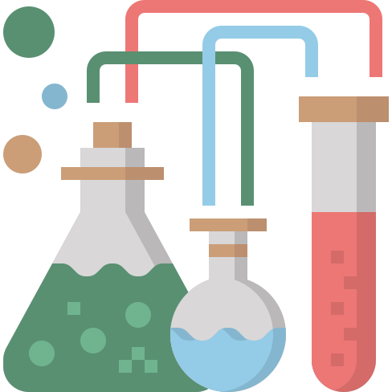

<nav class="navbar navbar-expand-lg navbar-dark bg-primary fixed-top" id="sideNav">
  <a class="navbar-brand js-scroll-trigger" href="#page-top">
    <span class="d-block d-lg-none">PrappMob Project</span>
    <span class="d-none d-lg-block">
      
    </span>
  </a>
  <button class="navbar-toggler" type="button" data-toggle="collapse" data-target="#navbarSupportedContent" aria-controls="navbarSupportedContent" aria-expanded="false" aria-label="Toggle navigation">
    <span class="navbar-toggler-icon"></span>
  </button>
  <div class="collapse navbar-collapse" id="navbarSupportedContent">
    <ul class="navbar-nav">
      <li class="nav-item">
        <a class="nav-link js-scroll-trigger" href="#browse">Browse</a>
      </li>
      <li class="nav-item" *ngIf="_sampleBrowsing && _connectionToDB">
        <a class="nav-link js-scroll-trigger" href="#addSample">
           Add Sample
        </a>
      </li>
      <li class="nav-item" *ngIf="_connectionToDB">
        <a class="nav-link js-scroll-trigger" href="#filter">Filter</a>
      </li>
      <li class="nav-item">
        <a class="nav-link js-scroll-trigger" href="#credits">Credits</a>
      </li>
    </ul>
  </div>
</nav>